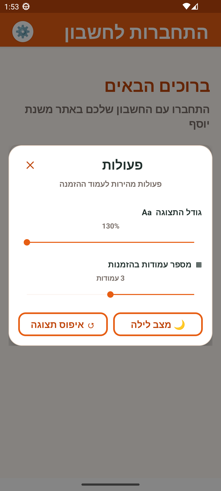
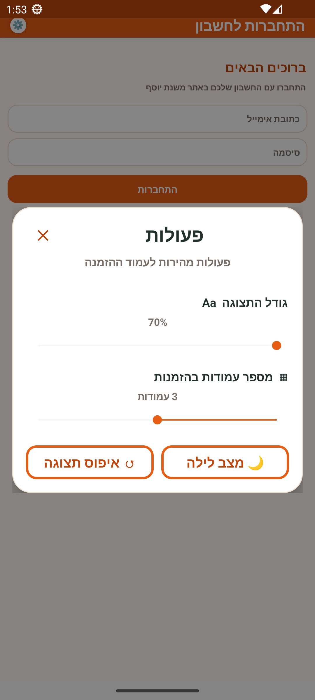
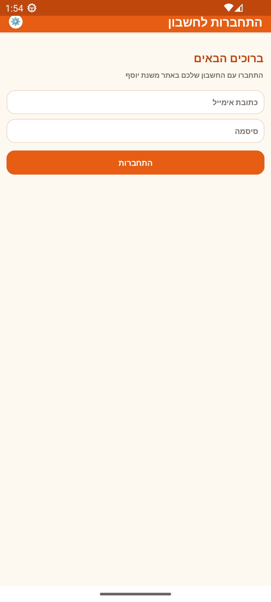
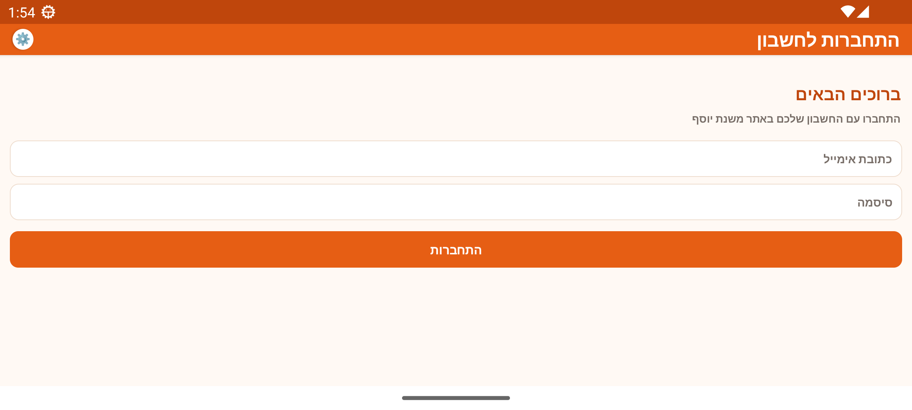
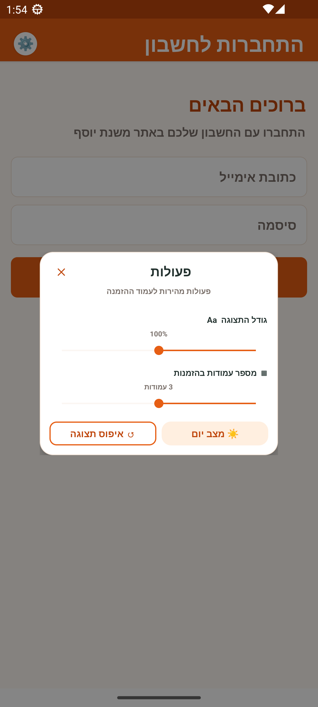

Package org.mishnatyosef.mobile · {"model": "sdk_gphone64_x86_64", "sdk": "33", "release": "13", "abi": "x86_64", "locale": "", "screen": "1080x2400"}
| # | Action | Detail | Result | Error |
|---|---|---|---|---|
| 1 | clear_data | passed | ||
| 2 | shell | cmd='pm grant org.mishnatyosef.mobile android.permission.POST_NOTIFICATIONS', ignore_errors=True | passed | |
| 3 | shell | cmd='appops set org.mishnatyosef.mobile SCHEDULE_EXACT_ALARM allow', ignore_errors=True | passed | |
| 4 | launch | passed | ||
| 5 | wait_for | text='ברוכים הבאים' | passed | |
| 6 | tap | desc='פתיחת הגדרות ופעולות' | passed | |
| 7 | wait_for | text='פעולות מהירות' | passed | |
| 8 | swipe | desc='גודל התצוגה' | passed | |
| 9 | wait | seconds=3 | passed | |
| 10 | screenshot | name='scale-left-end' | passed | |
| 11 | assert_foreground | passed | ||
| 12 | wait_for | dialog reopens after the scale change | passed | |
| 13 | swipe | desc='גודל התצוגה' | passed | |
| 14 | wait | seconds=3 | passed | |
| 15 | screenshot | name='scale-right-end' | passed | |
| 16 | assert_foreground | passed | ||
| 17 | back | passed | ||
| 18 | screenshot | name='login-at-changed-scale' | passed | |
| 19 | rotate | to='landscape' | passed | |
| 20 | wait | seconds=2 | passed | |
| 21 | screenshot | name='landscape-changed-scale' | passed | |
| 22 | rotate | to='portrait' | passed | |
| 23 | wait | seconds=2 | passed | |
| 24 | tap | desc='פתיחת הגדרות ופעולות' | passed | |
| 25 | wait_for | text='פעולות מהירות' | passed | |
| 26 | rotate | to='landscape' | passed | |
| 27 | wait | seconds=2 | passed | |
| 28 | screenshot | name='dialog-landscape' | passed | |
| 29 | rotate | to='portrait' | passed | |
| 30 | wait | seconds=2 | passed | |
| 31 | tap | desc='פתיחת הגדרות ופעולות' | passed | |
| 32 | wait_for | text='פעולות מהירות' | passed | |
| 33 | tap | text='איפוס תצוגה' | passed | |
| 34 | wait | seconds=3 | passed | |
| 35 | screenshot | name='after-reset' | passed | |
| 36 | assert_text | text='100%' | passed | |
| 37 | assert_foreground | passed |




